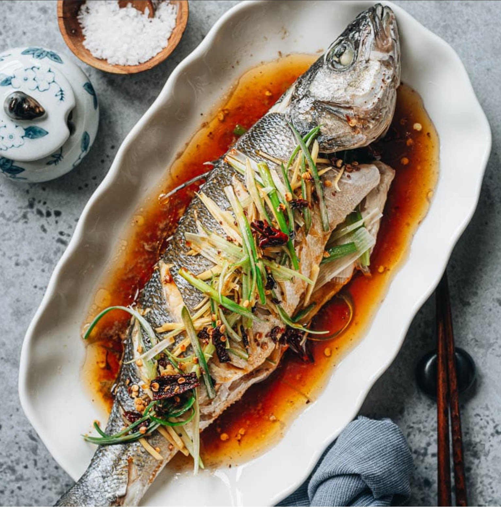

Steamed Fish (清蒸鱼)

Ingredients
Instructions
- Place ginger and half the green onion inside the fish.
- Set fish on a plate and drizzle with Shaoxing wine.
- Steam over high heat for 8–10 minutes.
- Remove ginger/onion used for steaming.
- Top with fresh green onion and cilantro.
- Heat oil until shimmering and pour over aromatics.
- Drizzle soy sauce around the fish and serve.